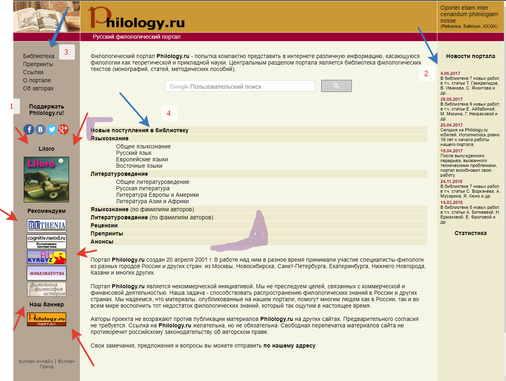

Будущая успешная личность

ФИО: Лыткина Алёна Романовна
Место учёбы: НИУ ВШЭ, ОП Филология
Научные интересы: Советская литература, художественный перевод текстов, локализация в игровой индустрии
О себе: С дуру (нет) взяла два проекта: про ГУЛаг и про текст XII века. Достаточно полно меня описывает?
В XXI веке невозможно серьёзно заниматься наукой, не задействуя современные технологии, появляется острая необходимость искать новые применения имеющимся инструментам. Как человек с НИСа, на котором изучаются точные методы, очень авторитетно заявляю, что в исследовании литературы можно применять статистику, графики и даже экселевские таблички. Без них никак. И без электронных библиотек. и без доступа к куче научных статей. Технологии рулят. Филологи всего мира, объединяйтесь!
1. Это что, БАННЕРЫ? Я вернулась во времена форумных ролёвок?
2. Эти новости справа всегда смотрелись как колонка некрологов, чесслово.
3. Меню? Максимально незаметное, но в верхней части сайта? Со шрифтами тут вообще беда, непонятно, где текст, а где ссылки.
4. Меню? х2 Категории некликабельны, но при открытии субкатегории, вываливается стена текста.
Bonus: гугл поиск? Такое себе решение.
Из хорошего: вызывает чувство ностальгии по детству, а форумные ролевые приносили мне много радости! Ну и непосредственно статей много.
